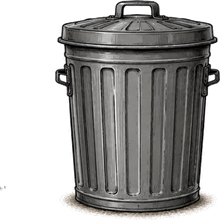

Willkommen auf SACK IT!
Hier kommentiert Sackingen zurück. Manchmal hilfreich. Meistens nicht.
💬 42 Sackantworten
Sack

Archivieren KackhaufenDie offizielle Plattform für alle Säcke, die ihren Sack ausschütten, ablegen oder dazugeben wollen.
Bald können Leser hier posten, liken und mit Sackingen interagieren.
Keine neuen Sacks erstellen. Aber Beiträge schreiben, Dinge liken und Teil der Diskussion werden.
Hier kommentiert Sackingen zurück. Manchmal hilfreich. Meistens nicht.

Archivieren KackhaufenEndlich mal wieder stabile Genetik. Viel Liebe und noch mehr Sonne.
03:41 Uhr. Gruselsackwald. Filterbach. Wer jetzt noch lacht, ist Teil des Problems.
Demo fürs spätere Grundgerüst. Noch keine echte Registrierung.